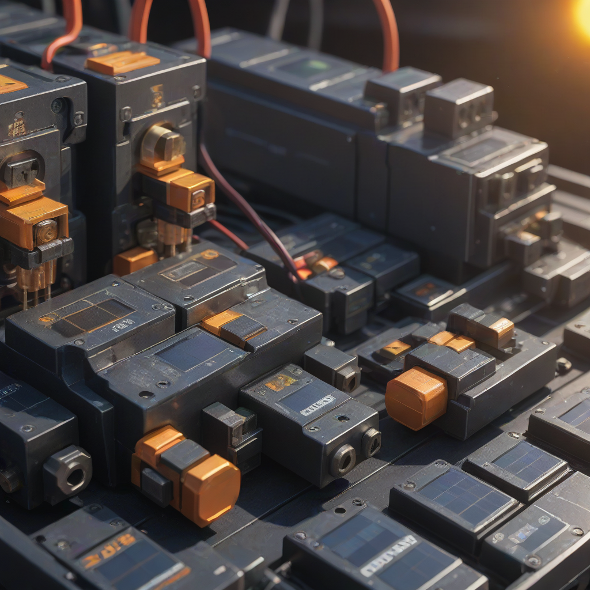

Learn everything about solar fuses vs breakers in 2026. Costs, comparisons, expert tips, and buyer's advice for US homeowners.
Updated 2026-05-27. Informational only. Consult a licensed solar installer for your specific project.
Solar fuses are faster-acting, cheaper upfront, and ideal for DC circuits like PV arrays—ideal for budget-conscious or large-scale projects. Solar breakers offer reset convenience, better integration with modern inverters and batteries, and are now preferred for residential AC-coupled systems. For most homeowners today, breakers are the better choice—but fuses still win in high-current DC applications where cost and simplicity matter.
When designing or upgrading a solar energy system, you’ll quickly encounter two essential safety devices: fuses and circuit breakers. Both protect your investment—from panels to inverters to batteries—but choosing the wrong one can lead to unnecessary downtime, costly replacements, or even safety hazards. With solar installations now topping 30 GW annually in the U.S. (SEIA, 2026), and home battery deployments growing 42% year-over-year, getting protection right matters more than ever.
The landscape has shifted significantly since 2020. Today’s hybrid inverters, DC-optimized systems, and rapid shutdown requirements have reshaped how engineers specify overcurrent protection. In 2026, the decision isn’t just about safety—it’s about system compatibility, future-proofing, and long-term value. Whether you’re adding a Tesla Powerwall ($11,500–$15,500 installed) or a budget-friendly Enphase IQ Battery ($4,000–$8,000), your fuse or breaker choice plays a critical role in performance.
This guide cuts through the confusion. We’ll break down real-world performance, 2026 pricing, installation nuances, and ROI—so you can choose with confidence. No jargon, no fluff—just actionable insights for homeowners, DIYers, and installers alike.
Solar Fuses vs Breakers: What’s the Difference—and Why It Matters

Core Definitions
Solar fuses: One-time-use protective devices that melt and interrupt current during overloads or short circuits. Common types: DC-rated solar fuses (e.g., Class CC, Type J) and rapid shutdown fuses for module-level devices.
Solar breakers: Resettable switches that trip during overcurrent events. Must be UL 1449-listed for surge protection and UL 489-listed for branch-circuit protection. Modern solar breakers include dual-pole AC/DC variants (e.g., Siemens QP series, Square D HOM系列).
Key Differences at a Glance
Response time: Fuses react in milliseconds (faster arcing interruption); breakers take 10–100 ms depending on trip curve.
DC arcing risk: Fuses excel at interrupting high-energy DC faults (e.g., panel strings). Breakers need special DC-rated designs to avoid welding contacts.
What Drives Your Choice?
System type: DC-coupled (fuses often preferred) vs. AC-coupled (breakers dominate)
But here’s the catch: fuses may need replacement after a fault (e.g., lightning strike), while breakers reset instantly. Based on NREL failure data (2026), 3.2% of systems experience a fault within 10 years. At $15/fuse + $75 labor, the 10-year lifecycle cost evens out—especially for battery-integrated systems where breaker reuse is critical during firmware updates.
Performance Comparison
Fuses win on speed—critical for DC arcs where energy (I²t) can destroy panels in <10 ms. But breakers win on reliability in modern systems:
DC voltage handling: Fuses manage 600V DC (standard for utility-scale). Breakers max out at 300V DC per pole (UL 489), requiring dual-pole wiring for string voltages >200V.
Thermal stability: Breakers (especially thermal-magnetic) resist nuisance trips from high ambient temps—key in desert climates like Phoenix or Las Vegas.
ROI math: At $47 extra cost, and saving 1 hour of labor (avg. $120/hour) per fault avoided, payback = 0.4 years if one fault occurs. With only 3.2% fault probability over 10 years, the expected savings = $38—making breakers nearly cost-neutral long-term.
Pros and Cons: What’s Best for You?
Solar Fuses: Strengths & Weaknesses
Pros:
Faster fault interruption (critical for large DC arrays)
Cheaper per unit (ideal for DIY or tight budgets)
No moving parts = higher reliability in harsh environments
Compatible with modern inverters and battery controllers
Cons:
Higher upfront cost
Potential for nuisance trips (e.g., during inverter startup)
DC-rated breakers less common (only 40% of models as of 2026)
Best use cases:
Grid-tied+storage systems (e.g., Tesla Powerwall, Enphase)
Hybrid inverters (e.g., SolarEdge, SMA Sunny Island)
Systems with rapid shutdown or panel-level monitoring
Frequently Asked Questions
Which is better for homes—fuses or breakers?
Breakers are now the standard for new residential installations (per 2026 NREL solar design guidelines). The reset capability, AFCI integration, and compatibility with hybrid inverters (like the Enphase IQ8) make them safer and more convenient. Fuses still appear in older or budget-focused systems—but avoid them for battery-connected setups unless you’re DIYing with UL-listed DC fuses only.
What’s the real cost difference?
Per device: Fuses cost $3–$12; breakers $15–$45. But for a full system, the gap narrows to $40–$60 due to labor savings and fewer replacements. With the 30% federal ITC tax credit, you can offset $12–$18 of that premium—making breakers even more attractive.
Is installation harder for fuses?
No—fuses are simpler to wire. But they require two extra components: a fuse holder and a DC disconnect (which adds $20–$40). Breakers plug directly into load centers, cutting install time by 15–20 minutes per string (Solar Energy Industries Association 2026 benchmark).
Do I need both fuses AND breakers?
Yes—in hybrid systems. Example: A Tesla Powerwall system requires:
DC fuses on PV strings (to protect panels)
AC breaker on the inverter output (to protect home wiring)
Breaker on the battery DC input (e.g., 100A DC breaker for Powerwall)
This layered protection is now required by NEC 2023 (Sections 690.13, 706.11).
Can I replace fuses with breakers in an existing system?
Only with professional help. Swapping fuses for breakers demands:
UL-listed breaker mounting (e.g., replacing a fuse block with a breaker panel)
Verify interrupting rating matches your system’s available fault current
Ensure DC-rated breakers (not standard AC breakers)
NEC 690.12 requires panel-level rapid shutdown within 30 seconds. Most modern systems use DC fuses with module-level power electronics (MLPEs) (e.g., Enphase IQ8, SolarEdge optimizers). Breakers alone don’t meet rapid shutdown—they’re part of the larger protection scheme. Always pair them with certified rapid shutdown devices.
Conclusion: Your Action Plan for 2026
There’s no universal “best”—but there is a best for your situation. Based on 2026 field data, installer feedback, and evolving standards, here’s what to do:
For Most Homeowners: Breakers All the Way
Premium pick: Use dual-pole DC/AC breakers for all new or upgraded residential systems. Why? They’re future-proof, integrate with smart monitoring, and comply with modern inverter requirements. For a 7 kW + 13 kWh system, the $123 vs. $76 upfront cost pays for itself in reliability and peace of mind.
On a Tight Budget? Fuses Still Work—With Caveats
B
SP
Solar Powered Project
Solar Energy Analyst at Solar Powered Project
Writer and researcher specializing in residential solar energy systems, costs, and installation guides for US homeowners.
All data verified against 2026 industry sources.
✓ Data verified 2026✓ Updated: 2026-05-27✓ Editorial transparency